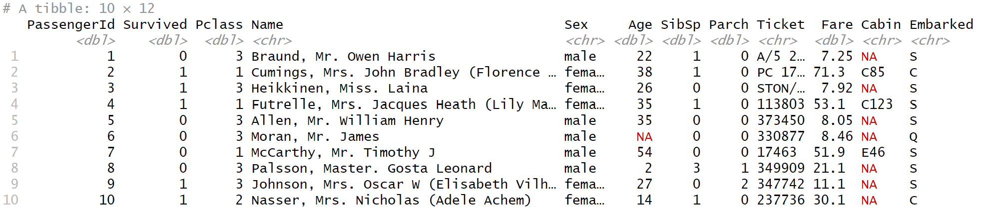
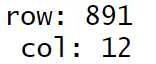
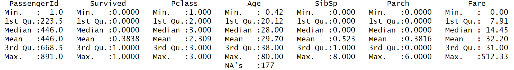
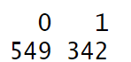
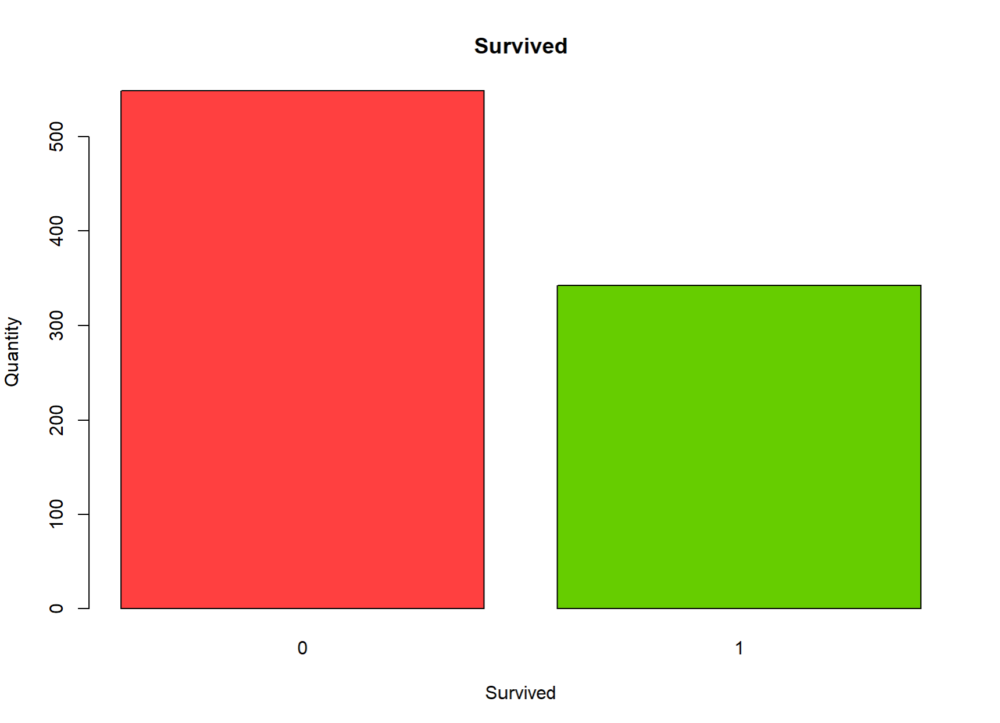
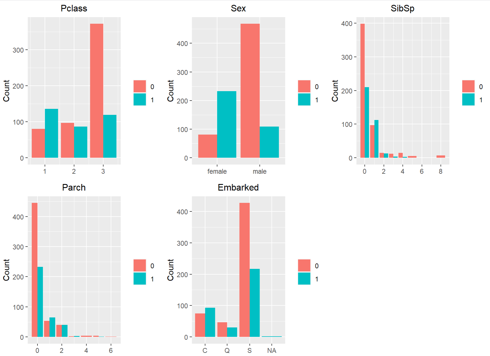

| Variable | Definition | Key |
|---|
| survival |
Survival |
0 = No, 1 = Yes |
| pclass |
Ticket class |
乘客的艙等 : 1 = 1st, 2 = 2nd, 3 = 3rd |
| sex |
性別 |
|
| Age |
年齡 |
|
| sibsp |
兄弟姊妹＋老婆丈夫數量 |
|
| parch |
父母小孩的數量 |
|
| ticket |
票號 |
|
| fare |
票的費用 |
|
| cabin |
房間號碼 |
|
| embarked |
出發港口 |
C = Cherbourg(法國/瑟堡昂科唐坦), Q = Queenstown(紐西蘭/皇后鎮), S = Southampton(英國/南安普敦) |
確認大致資料內容
head(df, 10)

計算並列印資料行列數量
dimensions <- dim(df)
num_rows <- dimensions[1]
num_cols <- dimensions[2]
cat("row:",num_rows,"\n","col:",num_cols,"\n")

總共有891筆資料和12欄feature。
觀察每個 feature 的分佈情形
vars <- c("PassengerId", "Survived", "Pclass","Age","SibSp","Parch","Fare")
summary(df[, vars])

其中Age有一些缺失值，且欄位中的最大最小值、平均值等分布不同，進行訓練前，需要先將資料進行normalize
查看觀察生存的人數
survived_value <- table(df$Survived)

用長條圖的方式表示
death <- survived_value[1] # 0:表示死亡
survive <- survived_value[2] # 1:表示生存
counts <- c(death, survive)
barplot(counts, names.arg = c("0", "1"),
xlab = "Survived", ylab = "Quantity",
main = "Survived",
col = c("brown1", "chartreuse3"))

最後有549人罹難和342人獲救。
用長條圖的方式表示
features <- c("Pclass", "Sex", "SibSp","Parch","Embarked")
n_rows <- 2
n_cols <- 3
fig <- ggplot() +
theme_void() +
theme(plot.margin = unit(c(1, 1, 1, 1), 'lines'))
plot_list <- list()
for (r in 1:n_rows) {
for (c in 1:n_cols) {
i <- (r - 1) * n_cols + c
if (i <= 5) {
plot <- ggplot(df, aes_string(x = features[i])) +
geom_bar(aes(fill = factor(Survived)), position = 'dodge') +
labs(title = features[i], x = NULL, y = 'Count') +
theme(plot.title = element_text(hjust = 0.5, size = 12),
legend.position = 'right', legend.title = element_blank())
plot_list[[i]] <- plot
}
}
}
grid.arrange(grobs = plot_list, nrow = n_rows, ncol = n_cols)

大致可以觀察出
- 女性存活的機會比男性來得高
- 頭等艙存活機會較高
- 可能有帶兄弟姊妹、老婆丈夫的乘客存活機會較高
- 有帶小孩父母親的存活機會較高
- 從S碼頭出發有可能艙位比較低，存活機會較低